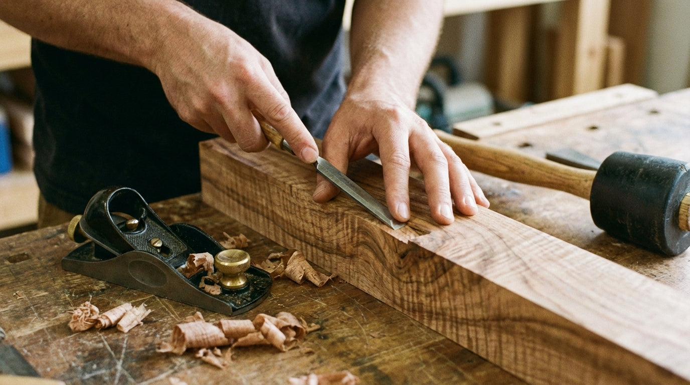

Our craft
Built by hand.
Built to last.
Every table is made from 2 inch thick, UK-sourced quality timber. Steel legs and fixings are UK-sourced too. Each piece is cut, shaped, and finished by hand in our Dorset workshop.
The natural contours and grain patterns bring character and individuality to every design, finished with a thickness of approximately 40-45mm for a refined yet substantial feel.
Timber
2" thick, UK-sourced
Steel & fixings
UK-sourced too
Made in
Dorset, UK
Uniqueness
No two ever alike